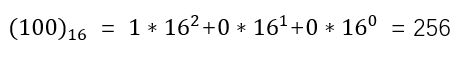
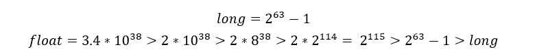
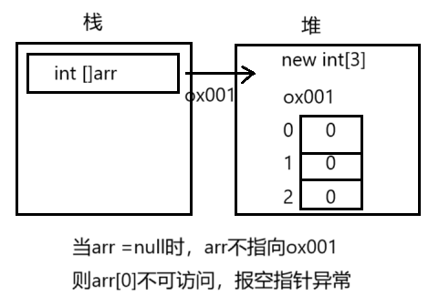

【Java】Java语言基础（二）
一、基础部分
1. 关键字keyword
全是小写，能被虚拟机识别。goto 和 const 是保留字（现在保留，可能会成为关键字）。
2.标识符
作用：起名字。
组成：$ _ 数字 英文大小写 （不能以数字开头）
常见的命名规则：
- 见名知意
- 包：其实就是文件夹，用于把相同的类名进行区分
- 单级包（全部小写）：wangty
- 多级包（用
.隔开）：cn.wangty –指cn包下的wangty包
- 类/接口
- 一个单词组成，首字母大写：Student、Dog
- 多个单词组成，大驼峰：HelloWorld
- 方法/变量
- 一个单词，首字母小写：main方法、name变量
- 多个单词，小驼峰：studentAge
- 常量
- 一个单词，全部大写：PI 圆周率
- 多个单词，全部大写，以
_隔开：STUDENT_MAX_AGE
{ }中可以写：结构定义语句、功能执行语句3.注释
用于解释说明程序，调试排错
- 单行注释：
// - 多行注释：
/* */（不能嵌套使用） - 文档注释：
/** */（被javadoc工具解析，生成一个说明书，面向对象部分讲解）
4.常量
执行过程中，其值不可发生改变。
使用final关键字申明（前端一般使用const申明），只能进行一次赋值
- 字面值常量
- 字符串常量：双引号括起来的内容，例：
"Hello" - 整数常量：所有整数，例：
100 - 小数常量：所有小数，例：
0.11111 - 字符常量：单引号括起来的内容，例：
'A' - 布尔常量：真/假，例：
truefalse - 空常量：
null
- 字符串常量：双引号括起来的内容，例：
- 自定义常量
5.进制
1) 定义
表示进位的方式。（X进制：逢x进一）
计算机的电子原件状态：开/关 ，用数字1/0 表示
表达数据的时候，国际化标准组织规定，用8个这样的信号来表示一个数据，单位为字节
- ob开头：2进制
- o开头：8进制
- ox开头：16进制
2) 进制转换
X → 10
进制的转换：（任意进制 → 十进制）
- 系数：每一个位上的数值本身，成为系数
- 基数：X进制，基数为X
- 权：从右开始，以0开始编号，即为该位上权值
示例：2进制 转 10进制

示例：8进制 转 10进制

示例：16进制 转 10进制
8421码
8421码：用于2进制与10进制的快速转换
| 2 | 1 | 1 | 1 | 1 | 1 | 1 | 1 | 1 |
|---|---|---|---|---|---|---|---|---|
| 10 | 128 | 64 | 32 | 16 | 8 | 4 | 2 | 1 |
示例：2进制 转 10进制
将不同权位上为1的，对应位置上的数值相加

示例：10进制 转 2进制
左添0，从高位寻起，有则为1；相减，无则为0。去掉左0，添ob标识
| 10 | 100 | 100 | 36 | 4 | 4 | 4 | 0 | 0 |
|---|---|---|---|---|---|---|---|---|
| 10 | 128 | 64 | 32 | 16 | 8 | 4 | 2 | 1 |
| 2 | 0 | 1 | 1 | 0 | 0 | 1 | 0 | 0 |
10 → X
进制的转换：（十进制 → 任意进制）
商为0时结束，倒写余数。除基取余，直到商为0，余数反转。
示例：10进制 转 2进制

示例：10进制 转 8进制

示例：10进制 转 16进制

X → Y
任意进制之间转换：（X → Y）
以10进制做桥梁，X → 10，10 → Y
6.有符号数据表示法
在计算机内，有符号数有3中表示法：原码、补码、反码
在计算机操作的时候，都是采用数据对应的二进制补码来计算的。
原码：二进制定点表示法，最高位为符号位，"0"表示正，"1"表示负，其余表数值的大小
示例：±7。首先得到7的二进制为111
| 原码 | 符号位 | 数值位 | |
|---|---|---|---|
| +7 | 0 | 0000111 | 总共8为，不为1的补0 |
| -7 | 1 | 0000111 | 总共8为，不为1的补0 |
反码：正数的反码与其原码相同。负数的反码，对其原码逐为取反，但符号位除外。
| 反码 | 符号位 | 数值位 | |
|---|---|---|---|
| +7 | 0 | 0000111 | |
| -7 | 1 | 1111000 | 对应取反 |
补码：正数的补码与其原码相同。负数的补码，是在反码的基础上加1
| 反码 | 符号位 | 数值位 | |
|---|---|---|---|
| +7 | 0 | 0000111 | |
| -7 | 1 | 1111001 | 加在尾部，若要进位则进 |
2个练习加深印象：
- 已知X的原码10110100B，求补/反码
- 第一个符号位，为1，该数为负数
- 原码B表示二进制
- 反码：0 1001011
- 补码：0 1001100 （注意进位）
- 已知X补码11101110B，求原码
- 补码减1，注意借位，不够往前借
- 补码：1 1101110
- 反码：1 1101101
- 原码：1 0010010
7.变量
内存中的一小块区域。
|
|
- 变量相加：先提升数据，再计算运行
- 常量相加：先计算结果（调试、编译），再赋值。再检测数据类型范围，超出则报错
|
|
- 字符串相加：其
+表示为连接符。结果为：字符串 - 数值相加：其
+表示为运算符。结果为：计算结果
|
|
- 定义Long类型变量，
1L。 - 定义Float类型变量，
1f。 - 整数默认为int，浮点默认为Double
- byte、short在定义时，他们接受的其实是一个int类型的值。（做了一个数据检测，如果不再它们的范围内，就报错）
- byte值的问题
|
|
8.默认类型转换
char(2)、byte(1)、short(2) → int(4) → long(8) → float(4) → double
为什么 ‘8字节’ 可以转换为 ‘4字节’？
-
long：8字节，整数存储
-
float：4字节，浮点型存储
-
它们底层的存储类型不同，float类型在计算机中只使用4个字节存储，遵循IEEE-754格式标准。一个浮点数有两个部分构成：
-
底数m：以二进制数表示词浮点数的实际值，占24bit，高位始终为1。
-
指数e：占用8bit的二进制数，范围0-255。有±，减127才是真正的指数
-
例如：
17.625存储- 二进制：10001.101
- 整数部分：除以2，商为0，余数反转。（10001.101）
- 小数部分：乘以2，乘位为0，进位顺序取（1.0001101高位恒为1）
- 右移至小数点前只有1位，2→3，需移动4位，指数加127 = 4 + 127=131
- 131二进制：10000011
结果为：0 1000001 10001101 00000000 00000000
符号位 指数 底数 0 10000011 0001101 0…0
-
-
float表示的数据范围比long大
证明：
 -
char能存一个中文字符，一个字符2个字节。java语言采用Unicode编码。
9.运算符
1) 算术运算符（Operator）
+、-、×、÷、%、++、--
例一：a = 10； b = 10 ；c = 10；
|
|
例二：x = 4
|
|
2）赋值运算符
=、+=、-=、*=、/=、%=
例一：short s = 1；
|
|
3）比较运算符（关系运算符）
<、>、<=、>=、!=、==、instanceof
结果都是boolean类型，只要有一个满足条件就可以
4）逻辑运算符
&与 ：同真为真|或 ：同假为假^异或：同名为假，异名为真!非 ：取反&&短路与 ：左假右不管||短路或 ：左真右不算
左右必须都是布尔型表达式。
5）位运算符（2进制）
<<扩大，正数补0，负数补1>>缩小，正数补0，负数补1&、|、^当两边为数据做的是“位运算”，两边为表达式做的是“逻辑运算”~、>>>无符号右移，全补0
例一：某一个数据对另一个数据位异或两次，数据不变
|
|
例二：将两个变量所携带的整数进行交换。a换成b，b换成a
|
|
|
|
|
|
|
|
10.键盘录入数据（Scanner）
-
导包
1import java.util.Scanner; -
创建键盘录入对象
1Scanner sc = new Scanner(System.in); -
通过对象获取数据
1 2int x = sc.nextInt(); //键盘录入 整数值 String s = sc.nextLine(); //键盘录入 字符串
例一：
|
|
11.流程控制语句
1）顺序结构
|
|
2）选择结构（if/switch）
|
|
|
|
if/switch的区分：
- Boolean用if
- 1000上万数据用if
- 小数范围用if
- 针对几个常量值情况用switch
3）循环结构（for/do-while）
for循环语句
|
|
例一：输出1~10
|
|
例二：求1~10的数据和
|
|
例三：求1~100之间的偶数和
|
|
例四：求5的阶乘
|
|
例五：水仙花数（求所有水仙花数）
|
|
while循环语句
可以与for循环等价转换
|
|
例一：按照for语句，交换各项位置
|
|
do-while循环语句
|
|
|
|
三种循环的区别：
- do-while至少执行一次循环体
- while、for必须判断条件再循环（只有这一个区别）
死循环：
ctrl+c 强制停止循环。一定注意造成死循环是因为没有写条件控制
12.跳转控制语句
1）break中断
break使用场景（离开下面两个场景，无意义）
- switch语句中
- 循环语句中
|
|
2）continue继续
使用场景，for循环中。（离开此场景无意义）
跳出本次循环，进入下一循环体
（0,1,2,跳出，4,5,6…）
3）return返回
使用场景，结束一个方法，跳转到上层调的方法
方法的注意事项：
- 方法不调用不执行
- 方法与方法是平级关系，不能嵌套定义
- 方法定义的时候参数之间用逗号隔开
- 方法调用时不用在传递数据类型
- 如有明确返回值，一定要return
二、核心部分
1.方法（函数）
方法定义在一个类中，完成特定功能的代码块。
|
|
参数：
- 实参：实际参与运算的
- 形参：形式上定义的，用来接受实际参数的
return：结束方法
返回值：就是功能的结果，由return带回给调用者
例一：求2个数的和
|
|
特例：main方法，在Java虚拟机处调用，所以不用认为调用，依然可以运行
|
|
方法的调用方式：
|
|
|
|
|
|
void方法调用：只适用于第一种"单独调用"
2.重载
方法的功能相同，参数列表不同，java允许它们起相同的名字。
参数列表不同：
- 参数个数不同
- 参数数据类型不同
通过参数个数识别，不同的方法。JVM会根据不同的参数，去调用不同的方法。
|
|
3.数组
数组是用于存储多个变量(元素)的容器，这多个元素的数据类型相同。
|
|
数组定义后，没有值，需要初始化
|
|
初始化：开辟内存空间，并赋值
- 静态初始化：给定元素数值，长度系统定
- 动态初始化：给定系统长度，由系统分配初始值（默认为0）
|
|
|
|
注意：不要同时使用动/静态初始化。
使用System.out.println(arr) 输出数组arr，显示数组的地址值
用数组名和索引相结合，可以获取数组中指定编号的元素。格式：数组名[索引值]。
Java中的内存分配以及栈和堆的区别：
为了提高运算效率，对内存空间进行了不同区域的划分
- 栈：存"基本类型变量"和"引用变量"
- 不同区域：有特定的“处理数据方式"和"内存管理方式"
5个内存空间：
- 栈（存储局部变量：方法定义上、方法申明上）
- 堆（存储new出来的东西 + 数组）
- 方法区
- 本地方法区（和系统有关）
- 寄存器（给CPU使用）
堆内存的特点：
- 每一个new出来的东西都有地址值
- 每个变量都有默认值
- byte、short、int、long → 0
- float、double → 0.0
- char → ‘\u0000’ （空字符）
- boolean → false
- 引用类型 → null
- 使用完毕后，就变成垃圾，但是并没有立即收回，在垃圾回收器空间的时候回收。
栈内存的特点：
- 用完即释放（数据脱离其作用域）
图解：

数组操作（越界/空指针）问题：
ArrayIndexOutOfBoundsException 数组索引越界异常：原因你访问了不存在的索引。
NullPointerException 空指针异常：原因数组已经不指向堆内存了，但你使用数组名访问了元素。
图解：
数组操作（遍历）：
依次输出数组中每一个元素。
|
|